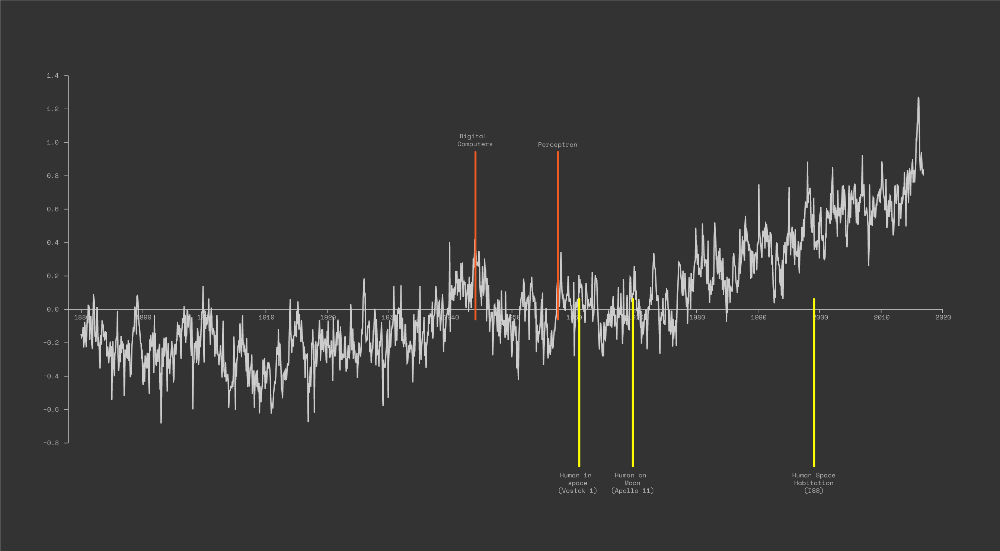

The Planetary Bureau
It's Time To Listen
The Earth speaks.
Since the beginning of recorded time, we’ve always asked ourselves this one question: why are we here? Is it because we won the evolutionary race? Or despite it? The human race is the dominant species on Earth for one reason, we were the winning entry in the competition of life on Earth. The planet presented life with a very specific set of conditions–gravity, oxygen, water and more–which the human race and its ancestors took advantage of and survived. We not only survived and thrived, but we conquered. But before we outgrow the lab we were created in and escape altogether, we must learn to hear and communicate with the entity that created us, the planet we call Earth.
The human is limited in what it can sense, and the support of technology doesn’t do much in augmenting our senses. We are effectively blind in the larger scheme of things, and can only sense the narrowest of spectrums. In this aspect, we are outclassed by several other species on this planet. In order to communicate with the planet, we need to listen and listen well. The planet is speaking to us. The high levels of carbon are very possibly a catalyst for the next stage in our journey, as highlighted in studies conducted by PCMI.
 The data doesn't lie
The increase in temperatures corresponds accurately to the destruction wrought by our actions on this world as we attempt to terraform it and create our own systems. One could argue that in order to be independent of planets, we should be able to sustain ourselves using human made machines and systems. A planet is a life support system that created us, and we are on a path to wean ourselves off and support ourselves. The rise in average temperatures also corresponds to incredible events in human history–when we created the basis for artificial intelligence, and when we attempted to leave the planet. It is in my opinion that further research and study into planetary systems and trends will reveal similar inflection points across the board.
The planet speaks, and we are not listening. Temperature changes are just one of many data points that we should be paying attention to. Is the planet angry? The knowledge of generations of highly intelligent civilisations have unfortunately been lost to the whispers of time. Something I’ve repeatedly spoken about in the past, we’ve lost centuries of progress as a result of human in-fighting. We continue to sideline communities and people who possess knowledge that we don’t nurture in the mainstream. We have within our midsts people who can understand the whispers of the planet. Human intelligence will only grow with diversity. There is no other way to grow. The dominant voices within humankind are misguided in their definition of progress.